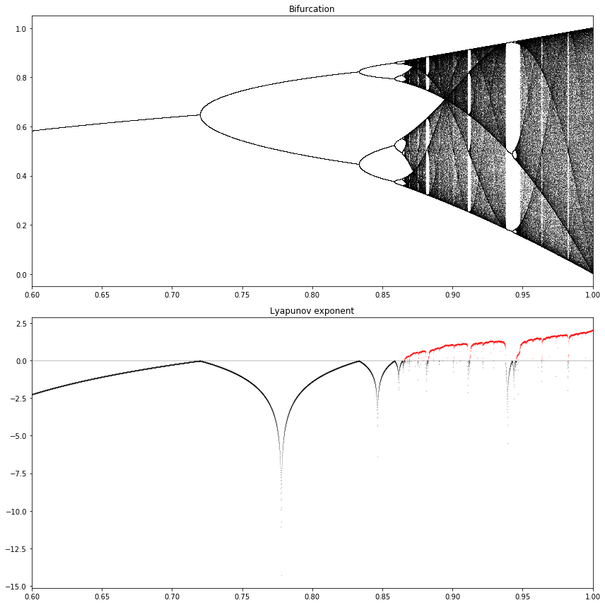

Bifurcation diagram of a chaotic dynamical system¶
Adapted from the Ipython Cookbook.
Here we consider a logistic map, which is an example of chaos arising from a simple nonlinear equation.
The logistic map models the evolution of a population including reproduction and mortality.
For more information, see Wikipedia articles on chaos theory, complex systems, the logistic map, iterated functions, bifurcation diagrams.
%matplotlib inline
# standard numpy and matplotlib imports
import numpy as np
import matplotlib.pyplot as plt
def logistic(r, x):
"""Function definition of logistic map.
f_r(x) = r x(1-x)
"""
return r*x*(1-x)
def sine_map(r, x):
return r * np.sin(np.pi * x)
def sine_map_deriv(r, x):
return r * np.pi * np.cos(np.pi * x)
x, step = np.linspace(0., 1., num=101, endpoint=True, retstep=True)
fig = plt.figure()
ax = fig.add_subplot(1,1,1)
r_param = 0.1
ax.plot(x, sine_map(r_param, x), color='black')
ax.set_xlabel('x')
ax.set_ylabel('f(x)')
fig.tight_layout()

def plot_system(r, x0, n, ax=None):
"""Plot the function and the y=x diagonal line."""
t = np.linspace(0,1, num=101)
ax.plot(t, sine_map(r,t), 'k', lw=2) # black, linewidth 2
ax.plot([0,1], [0,1], 'k', lw=2) # x is an array of 0 and 1,
# y is the same array, so plot
# from (0,0) to (1,1)
# Recursively apply y=f(x) and plot two lines:
# line from (x, x) to (x, y)
# line from (x, y) to (y, y)
x = x0
for i in range(n):
y = sine_map(r, x)
# Plot the two lines
ax.plot([x,x], [x,y], 'k', lw=1)
ax.plot([x,y], [y,y], 'k', lw=1)
# Plot the positions with increasing opacity
ax.plot([x], [y], 'ok', ms=10, alpha=(i+1)/n)
x=y # recursive: reset x to y
ax.set_xlim(0,1)
ax.set_ylim(0,1)
ax.set_title(f"$r={r:.1f}, \, x_0={x0:.1f}$")
fig = plt.figure(figsize=(12,12))
ax1 = fig.add_subplot(2,2,1)
plot_system(.3, 0.1, 10, ax=ax1) # start at 0.1, r parameter is 2.5, take n steps
# or fig, [[ax1, ax2], [ax3, ax4]] = plt.subplots(nrows=2, ncols=2, figsize=(12,12), sharey=True)
ax2 = fig.add_subplot(2,2,2)
plot_system(.5, 0.1, 10, ax=ax2)
ax3 = fig.add_subplot(2,2,3)
plot_system(.7, 0.1, 10, ax=ax3)
ax4 = fig.add_subplot(2,2,4)
plot_system(.9, 0.1, 20, ax=ax4)

n = 10000
r = np.linspace(0.6, 1.0, n) # n values of r linearly spaced
iterations = 1000 # iterations of the map; keep last iterations
last = 100
x = 0.1 * np.ones(n) # x_0 initial condition
lyapunov = np.zeros(n) # initialize vector for lyapunov exponents
# Display the bifurcation diagram with one pixel per point x_n^(r) for last iterations
fig = plt.figure(figsize=(12,12))
ax1 = fig.add_subplot(2,1,1)
ax2 = fig.add_subplot(2,1,2)
for i in range(iterations):
x = sine_map(r,x)
# Compute the partial sum of the Lyapunov exponent.
lyapunov += np.log(abs(sine_map_deriv(r,x)))
# Display the bifurcation diagram.
if i >= (iterations-last):
ax1.plot(r, x, ',k', alpha=0.25)
ax1.set_xlim(0.6, 1.)
ax1.set_title("Bifurcation")
# Display the Lyapunov exponent
# Add a zero line (lightened with alpha=0.5)
ax2.axhline(0, color='k', lw=0.5, alpha=0.5)
# Negative Lyapunov exponent
ax2.plot(r[lyapunov < 0],
lyapunov[lyapunov < 0] / iterations,
'.k', alpha=0.5, ms=0.5)
# Positive Lyapunov exponent
ax2.plot(r[lyapunov >= 0],
lyapunov[lyapunov >= 0] / iterations,
'.r', alpha=0.5, ms=0.5)
ax2.set_xlim(0.6, 1.)
#ax2.set_ylim(-2, 1)
ax2.set_title("Lyapunov exponent")
plt.tight_layout()

We see there is a fixed point for \(r < 3\), then two and four equilibria and a chaotic behavior when \(r\) belongs to certain areas of the parameter space.
The Lyapunov exponent is positive when the system is chaotic (in red).